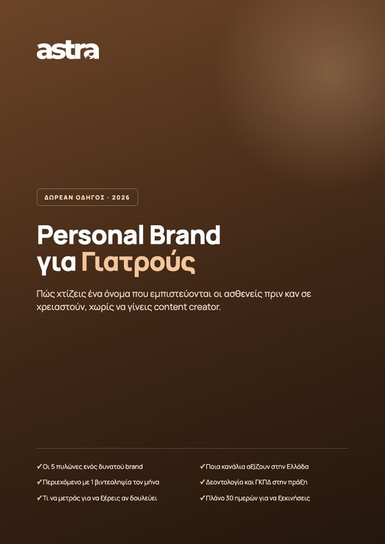

Ο ΔΩΡΕΑΝ ΟΔΗΓΟΣ ΣΑΣ
Ευχαριστούμε για τον χρόνο σας
Δυστυχώς, δεν είμαστε σε θέση να συνεργαστούμε αυτή τη στιγμή λόγω του budget σας. Μπορείτε να χρησιμοποιήσετε τον δωρεάν οδηγό που έχουμε δημιουργήσει, για να κάνετε χωρίς κόστος τα πρώτα σας βήματα στο προσωπικό σας brand.
Θα χαρούμε πολύ να συνεργαστούμε στο μέλλον.
ΚΑΤΕΒΑΣΕ ΤΟΝ ΔΩΡΕΑΝ ΟΔΗΓΟ ↓
Τι θα βρείτε μέσα
- Οι 5 πυλώνες ενός brand που φέρνει ραντεβού, όχι απλά likes.
- Τα 3 είδη βίντεο που χρειάζεστε, με παραδείγματα τίτλων που δουλεύουν.
- Ποια κανάλια αξίζουν στην Ελλάδα και ποια να αφήσετε.
- Το σύστημα της μίας βιντεοληψίας: ένα πρωινό τον μήνα, βίντεο για όλο τον μήνα.
- Δεοντολογία και ΓΚΠΔ στην πράξη, για να μη ρισκάρετε τη φήμη σας.
- Πλάνο 30 ημερών σε checklist, για να ξεκινήσετε από αύριο.